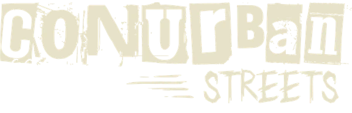
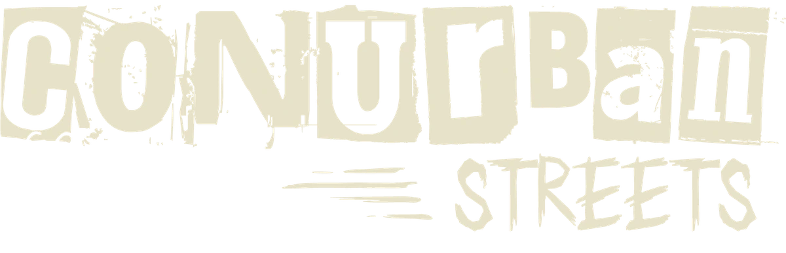
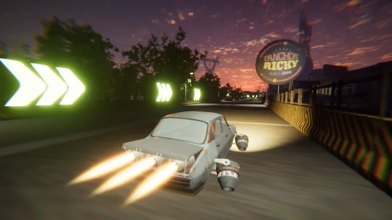
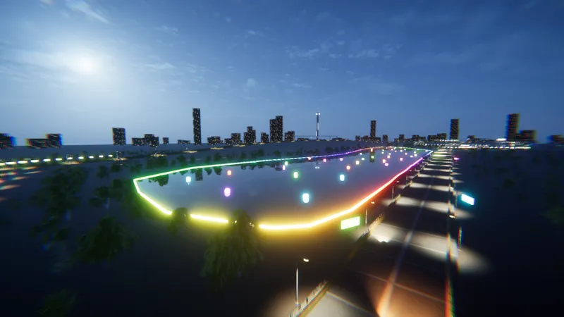
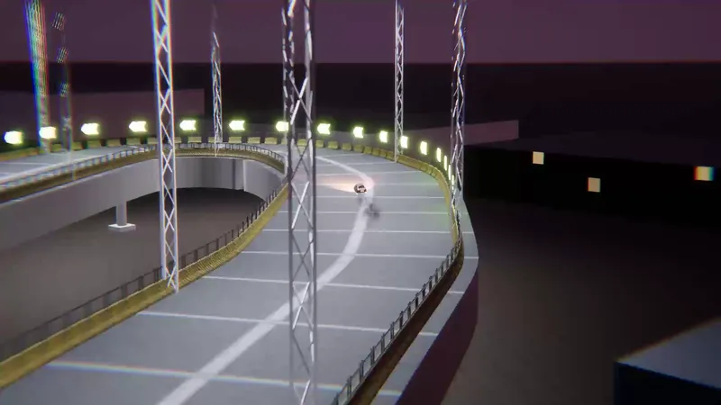

Fierros nacionales
El Reno Doce, el Ciento47 y el Cinco Cero Cuatro: clásicos argentinos oxidados y rearmados con lo que había.


ConurpunkCyberpunk, pero del conurbano.
Carreras arcade para PC · Próximamente en Steam
Conurban Streets es un arcade de autos en el conurbano bonaerense, reimaginado como un futuro cyberpunk atado con alambre. Nada de megaciudades cromadas: autos clásicos oxidados y calles que casi se pueden oler.
El Reno Doce, el Ciento47 y el Cinco Cero Cuatro: clásicos argentinos oxidados y rearmados con lo que había.
Circuitos inspirados en lugares reales del conurbano, en clave futurista improvisada.
Manejo arcade para agarrar y jugar, rivales que pelean cada curva y muros que no perdonan.
Carteles, murales y lugares emblemáticos llenos de guiños para quien creció en el conurbano.

Al lado de las vías del tren, entre esculturas y carteles de barrio.

El autódromo de noche, con la ciudad de fondo.

Barrio, Riachuelo y el viaducto de Puente La Noria.
Capturas del juego en desarrollo. El tráiler llega pronto.
¿Escribís sobre juegos o hacés contenido? Escribinos y te mandamos el press kit o una build para probar.
Te lo mandamos por mail: logo, key art, capturas en alta resolución y descripciones en castellano e inglés.
Conurban Streets es un proyecto indie que se arma a pulmón y a distancia. Si te copa el juego y tenés ganas de darnos una mano, escribinos y charlamos.